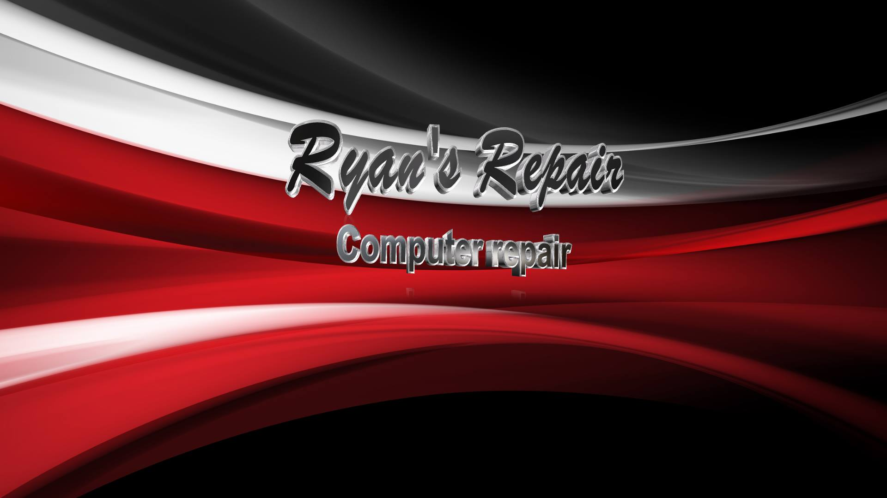

Ryan's Repair Offers Affordable and Reliable Computer Repair services.
ABOUT US!

Since 2018, Ryan's Repair has been working tirelessly to become a Computer Repair Service Provider in Marion Ohio. What started out as a hobby has now become our passion and we're delighted to share it with you.
We offer quality repairs at affordable prices. Our intense passion for fixing what’s broken will bring us to the forefront of the repair industry.
©Ryans Repair 2020